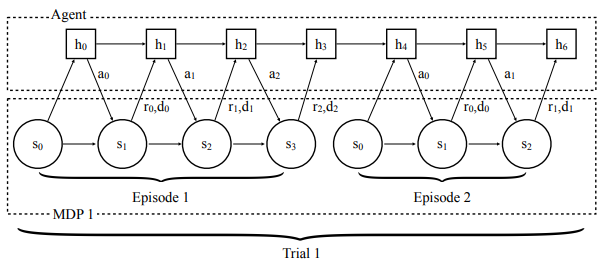
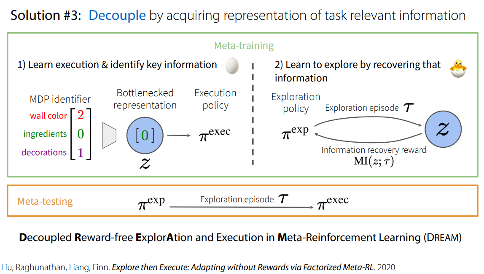
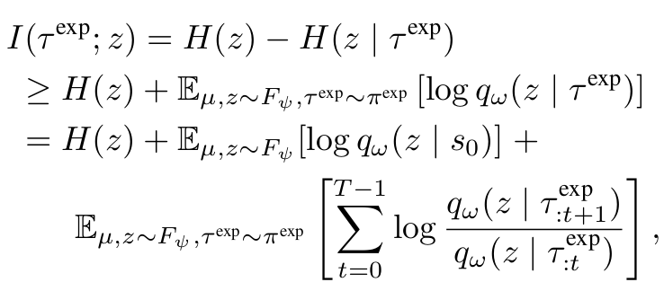

Lecture 12. Meta-RL: Learning to explore#
organization: 가짜연구소 (Pseudo Lab)
Editor: 이홍규
강의 자료: CS330 2020 Fall
강의 영상: Youtube
저희가 원래 학습 자료로 보던 CS330 강의 영상에는 Lecture 12가 누락되어 있습니다. 그래서 해당 강의와 유사한 영상을 대신 참고해서 작성했습니다.
1. End-to-End optimization의 한계#
[1]
End-to-End optimization의 대표적인 예시는 RNN 기반의 policy를 사용하는 \(\text{RL}^2\)입니다.
여기서 exploration policy와 execution policy가 따로 구분되지 않으며, exploration episode에서 policy가 리턴하는 최종 hidden state가 — 위의 예시에선 \(h_3\)가 바로 그 최종 히든 스테이트가 될 것입니다. — task에 대한 이해를 위한 정보로써 사용됩니다.
하지만 End-to-End optimization은 chicken-and-egg problem 혹은 coupling problem을 야기할 위험을 갖고 있습니다.
exploration과 execution의 서로에게 의존적이기 때문입니다.
다시 말해 좋지 못한 exploration은 해당 task의 MDP에 대해 많은 정보를 제공하지 못할 것입니다. 이는 곧 나쁜 execution으로 이어집니다.
역으로 나쁜 execution의 경우, 어떤 exploration이 제공되어도 적은 리워드를 리턴할 것이기 때문에, exploration을 제대로 평가할 수 없게 됩니다.
2. Latent Task Variable \(\mathbf z\) and Posterior Sampling#
이에 대한 대안으로는 각 태스크에 대해 latent task variable \(\mathbf z\)를 임베딩하는 것이 있습니다.
그리고 이에 대해 prior를 정의하고, \(\phi\)로 parameterized되는 posterior \(q_\phi\)를 구현함으로써, 다음과 같은 알고리즘을 구성하게 됩니다.
Kate Rakelly et al (2019) - “Efficient Off-Policy Meta-Reinforcement Learning via Probabilistic Context Variables”
3. Exploration Policy와 Execution Policy 분리하기#

또 다른 어프로치로는 exploration policy와 execution policy를 따로 분리해서 학습시키는 것입니다.
exploration policy \(\pi_\phi^\text{exp}\)의 경우, mutual information \(I(\tau^\text{exp};~z)\) 을 maximize하는 방향으로 학습하게 됩니다.
먼저 pseudo-code를 통해 대략적인 알고리즘을 파악해보십니다.
mutual information \(I(\tau^\text{exp};~z)\) 는 다음과 같이 정의됩니다.

위 수식에서 확인할 수 있듯, mutual information은 어떠한 lower bound를 갖게 되며, 우리는 해당 lower bound를 maximize하는 것으로 object를 수정할 수 있습니다.
4. Other solutions#
강의에서 소개된 다른 솔루션들은 다음과 같습니다.
Use intrinsic rewards - MAME (Gurumurthy, Kumar, Sycara. CoRL ’19)
Task dynamic & reward prediction - MetaCURE (Zhang, Wang, Hu, Chen, Fan, Zhang. ‘20)
References#
Chelsea Finn (2020). “Learning Exploration Strategies with Meta-Reinforcement Learning” (YouTube)
Chelsea Finn (2020). “Learning Exploration Strategies with Meta-Reinforcement Learning” (PDF)
Kate Rakelly, Aurick Zhou, Deirdre Quillen, Chelsea Finn, and Sergey Levine (2019). “Efficient Off-Policy Meta-Reinforcement Learning via Probabilistic Context Variables”
Evan Zheran Liu, Aditi Raghunathan, Percy Liang, and Chelsea Finn (2020). “Decoupling Exploration and Exploitation for Meta-Reinforcement Learning without Sacrifices”
Chelsea Finn (2021). “Stanford CS330: Deep Multi-task & Meta Learning I 2021 I Lecture 12” (YouTube).